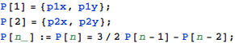

東京大学 2006年 理科 第1問
問題
Oを原点とする座標平面上の4点 で、条件
で、条件

を満たすものを考える。このとき、以下の問いに答えよ。
(1)  が曲線x y=1上にあるとき、
が曲線x y=1上にあるとき、 はこの曲線上にはないことを示せ。
はこの曲線上にはないことを示せ。
(2)  が円周
が円周 上にあるとき、
上にあるとき、 もこの円周上にあることを示せ。
もこの円周上にあることを示せ。
解答
(1)
問題文に従ってP[1],P[2],P[3],P[4]を定義する。



Reduceを使って が曲線x y=1上にないことを示す。
が曲線x y=1上にないことを示す。


(2)
(1)と同様に、 が円周上にあることを示す。
が円周上にあることを示す。


補足・感想
証明問題も述語論理式にできればMathematicaが証明してくれる。